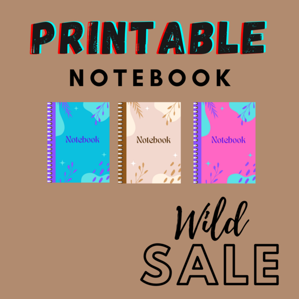

Printable Notebooks
A Printable Notebook is a customizable and eco-friendly solution for your note-taking needs. By choosing a Printable Notebook, you'll enjoy the flexibility to print only the pages you need, whether they're lined, grid, dotted, or blank templates. This personalization ensures that your notebook perfectly suits your specific requirements, whether for work, study, or creative projects.
Why Purcahse a Printable Notebook?
1. Customization: Tailor your notebook to your needs by selecting from various page templates.
2. Cost-Effective: Save money by printing only the pages you need.
3. Eco-Friendly: Reduce paper waste by printing on demand.
4. Convenience: Print pages at home or work, ensuring you never run out of the types of pages you prefer.
What You Get:
- A downloadable file containing multiple page templates.
- Instant access to print as many copies as needed.
- Various designs to choose from, catering to different tastes and needs.
- The flexibility to organize and bind the pages in your preferred format.
By purchasing a Printable Notebook, you invest in a versatile and sustainable tool that enhances productivity and creativity while allowing you to maintain a personal touch in your note-taking process.
